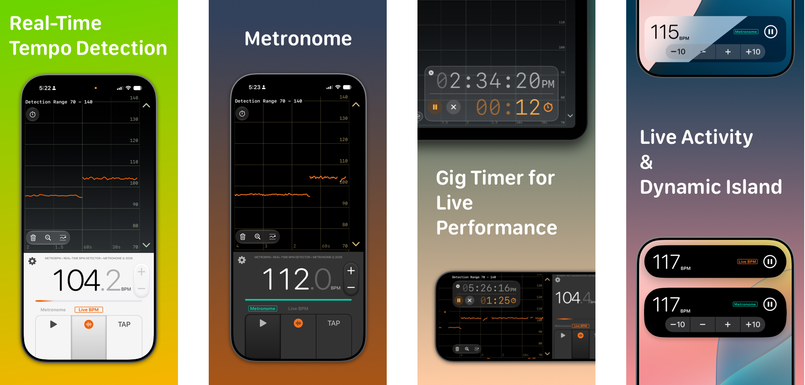

Real-time Tempo Detection
Detect tempo from rhythmic music live, with a tempo history plot and tap-to-detect.
Built-in Metronome
Visualized metronome with selectable sounds
Gig Timer
Built-in Timer for live performances or practice.
Live Activity & Dynamic Island
Monitor and control from the Home Screen, Lock Screen and Apple Watch.
Made for the Stage
Optimized for live on-stage use with a dark mode for low-power OLED displays.
No Ads or Subscription
One-time purchase, use everywhere.
Note
Tempo detection is currently optimized for music with strong rhythmic / percussive elements in quadruple or 6/8 time signatures; performance may vary on other inputs. Works best with live music and low background noise. Detection algorithm is based on Beat and Tempo Tracking by Michael Krzyzaniak.
Support
Feedback is welcome via email. As the sole developer, I will try to read all comments but cannot respond to all.
Privacy Policy
MetroBPM uses the microphone on your devices only for tempo detection. It does not record any audio, and it does not collect any data from you. Any setting and configuration are saved to your devices only.
Version History
1.1
- Major revamp of the tempo detection algorithm with improved accuracy and stability
- Improved efficiency should reduce impact on device battery
- NEW: Timer and clock feature for live performances or practice
- Optimized for iOS 26, 27
1.0.4
- Metronome and Tempo Detection can now run in the background with Live Activity on Lock Screen
- Dynamic Island and watchOS Smart Stack support
- Refined Zoomed mode to detect smaller tempo range
- Frequently used tempo now saved as home screen app shortcuts
- Additional metronome sounds
1.0.3
- iOS 18: add detect tempo shortcut to Control Center + Lock Screen
- Tempo graph can now be zoomed dynamically
- Better prompt for device microphone permission
1.0.2
- Mac (Catalyst) support
- Improved detection
- Fixed occasional tempo graph glitch
1.0.1
- iOS 18 support, dark themes